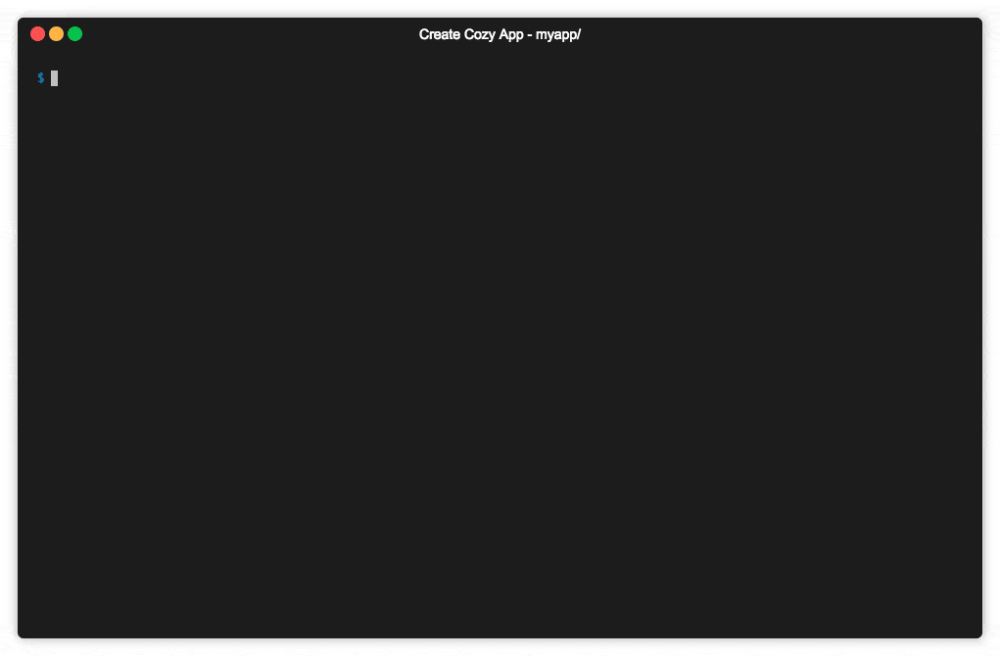
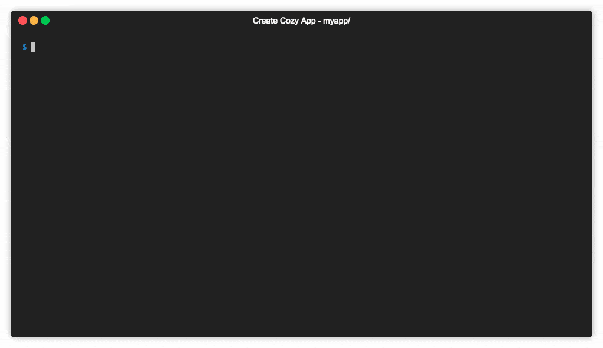

Create Your Application
Prerequisites¶
Developing an application for Cozy is like developing a front-end JS application. All you need to have is:
- NodeJS 20
- Yarn: a NodeJS package manager, like
npm - Docker to have a Cozy for dev
- Some basics about developing a single page application in HTML/JS or you just want to learn :)
Install the development environment¶
The only tool required to have a Cozy for development is Docker.
- Install Docker for OSX{:target=”_blank”}
- Install Docker for Windows{:target=”_blank”} (We have been told that installing Docker on some familial flavours of Windows may be a bit difficult. It has not been tested yet for this documentation.)
- Install Docker for GNU/linux: Ubuntu{:target=”_blank”} / Fedora{:target=”_blank”} / Debian{:target=”_blank”} / CentOs{:target=”_blank”}
On GNU/Linux, according to the documentation: « The docker daemon binds to a Unix socket instead of a TCP port. By default that Unix socket is owned by the user root and other users can only access it using sudo. If you don’t want to use sudo when you use the docker command, create a Unix group called docker and add users to it. Be warned that the docker group grants privileges equivalent to the root user. You should have a look at Docker’s documentation on security.
Every application running inside Cozy is a client-side HTML5 application interacting with your data through the API of the server. To develop an application, you’ll require a running Cozy server.
The easiest way is to use the Docker image for developers we provide.
Download it for now:
docker pull cozy/cozy-app-dev
Note
We update this image on a regular basis with the latest version of the server and our library. Don’t forget to update the image by running docker pull cozy/cozy-app-dev from time to time to keep your Cozy dev up to date.
Create your application¶
You can boostrap your application from scratch if you want, but we highly recommand to use our dedicated community tool create-cozy-app to bootstrap very easily a Cozy application for you.
This tool will generate an application using React, the framework we internally use in the Cozy Front team. But options are available if you want to use other frameworks.
To do so, run directly create-cozy-app without installing it globally by using the yarn create cozy-app command to bootstrap your application:
yarn create cozy-app mycozyapp
The script will download some dependencies (may take a while) and ask you a few questions, then create an application skeleton inside mycozyapp. Here is a quick demo of what’s happening:

If the yarn create cozy-app command fails with the There should only be one folder in a package cache [...] error, then run yarn cache clean and try again
You’ll also need a running cozy-stack server as a backend server. You can use the docker image you downloaded earlier.
Note: We disable CSP since we’re using a wepback-dev-server by defaut to get HMR that runs on localhost and not on cozy.localhost. This should not be used in production ! Please check the behavior of your application once you built it on production mode and have enabled CSP back.
touch ~/cozy.yaml # You can edit this file to configure the stack
docker run -ti --rm -p 8080:8080 -p 5984:5984 -p 8025:8025 -e COZY_DISABLE_CSP=1 -v $(pwd)/mycozyapp/build:/data/cozy-app/mycozyapp -v ~/cozy.yaml:/etc/cozy/cozy.yaml cozy/cozy-app-dev
Alternatively, you can build cozy-stack locally. You can follow the install instructions here.
Once it is installed, you can run it with cozy-stack serve --appdir <app-name>://<app-build-path> --disable-csp. For instance:
cozy-stack serve --appdir mycozyapp://home/claude/dev/mycozyapp/build --disable-csp
That’s it! You can start developing:
cd mycozyapp
yarn start
This command will run webpack in a watching mode with a server (webpack-dev-server) to serve
application assets. Your application will be available at http://mycozyapp.cozy.localhost:8080.
Password is cozy. In this mode HMR (Hot Module Replacement) is available.

Going Further¶
How the application works?¶
The minimal application consist of only two files:
- an HTML file,
index.html, with the markup and the code of your application - a manifest describing the application. It’s a JSON file named
manifest.webappwith the name of the application, the permissions it requires… We’ll have a deeper look to its content later.
Your application requires some informations to interact with the server API, for example the URL of its entrypoint, and an auth token. This data will be dynamically injected into index.html when it serves the page. So the index.html file has to contain some string that will be replaced by the server. The general syntax of this variables is {{…}}, so don’t use this syntax for other purpose in the page, for example inside comments.
You can use the following variables:
{{.Domain}}: will be substituted by the URL of the API entrypoint{{.Token}}: will be replaced by a token that authenticate your application when accessing the API{{.Locale}}: the lang of the instance{{.AppName}}: the name of the application{{.AppNamePrefix}}: the name prefix of the application{{.AppSlug}}: the slug of the application{{.AppEditor}}: the editor of the application{{.IconPath}}: will be replaced by HTML code to display the favicon{{.CozyClientJS}}: will be replaced with HTML code to inject the Cozy client library (old Cozy client){{.CozyBar}}: will be replaced with HTML code to inject the upper menu bar{{.ThemeCSS}}: will be replaced by thetheme.css. It is empty by default, but can be overrided by usingcontexts.{{.Favicon}}: will be replaced by the favicon served by the stack.
This allows to get this kind of index.html:
<!DOCTYPE html>
<html lang="{{.Locale}}">
<head>
<meta charset="utf-8">
<title>My Awesome App for Cozy</title>
<meta name="viewport" content="width=device-width, initial-scale=1">
<link rel="stylesheet" src="my-app.css">
{{.ThemeCSS}}
{{.CozyClientJS}}
{{.CozyBar}}
</head>
<body>
<div role="application" data-cozy-token="{{.Token}}" data-cozy-stack="{{.Domain}}">
</div>
<script src="my-app.js"></script>
</body>
</html>
Read the application manifest¶
Each application must have a “manifest”. It’s a JSON file named manifest.webapp stored at the root of the application directory. It describes the application, the type of documents it uses, the permissions it requires…
Here’s a sample manifest:
{
"name": "My Awesome application",
"name_prefix": "",
"slug": "myapp",
"permissions": {
"apps": {
"type": "io.cozy.apps"
},
"permissions": {
"type": "io.cozy.permissions"
},
"settings": {
"type": "io.cozy.settings"
},
"sample": {
"type": "io.cozy.dev.sample",
"verbs": ["GET", "POST", "PUT", "PATCH", "DELETE"]
},
"jobs": {
"type": "io.cozy.jobs"
}
},
"routes": {
"/": {
"folder": "/",
"index": "index.html",
"public": false
},
"/public": {
"folder": "/public",
"index": "index.html",
"public": true
}
}
}
Permissions¶
Applications require permissions to use most of the APIs. Permissions can be described inside the manifest, so the server can ask the user to grant them during installation. Applications can also request permissions at run time.
A permission must at least contain a target, the type of objects the application want to interact with. Can be a document type, or an action on the server. By default, all permissions on this object are granted, but we can also request fine grained permissions, for example limiting to read access. We can also limit the scope to a subset of the documents.
In the manifest, each permission is an object, with a random name and some properties:
type: mandatory the document type or action namedescription: a text that will be displayed to the user to explain why the application require this permissionverbs: an array of HTTP verbs. For example, to limit permissions to read access, use["GET"]selector: a document attribute to limit access to a subset of documentsvalues: array of allowed values for this attribute.
An application can request a token that grant access to a subset of its own permissions. For example if the application has full access to the files, it can obtain a token that give only read access on a file. Thus, the application can make some documents publicly available. The public page of the application will use this token asauthentication token when accessing the API.
Samples¶
Application requiring full access to files:
{
"permissions": {
"files": {
"description": "…",
"type": "io.cozy.files"
},
}
}
Application wanting to be able to read the contact information of cozy@cozycloud.cc
{
"permissions": {
"contact": {
"type": "io.cozy.contacts",
"verbs": ["GET"],
"selector": "email",
"values": ["cozy@cozycloud.cc"]
}
}
}
Routing¶
The application must declare all of its URLs (routes) inside the manifest. A route is an object associating an URL to a HTML file. Each route has the following properties:
folder: the base folder of the routeindex: the name of the file inside this folderpublic: a boolean specifying whether the route is public or private (default).
Sample:
"routes": {
"/admin": {
"folder": "/",
"index": "admin.html",
"public": false
},
"/public": {
"folder": "/public",
"index": "index.html",
"public": true
},
"/assets": {
"folder": "/assets",
"public": true
}
}
Behind the magic¶
Some server APIs may not be available right now through the library. If you want to use one of this method, you’ll have to call it manually. We’ll describe here how to access the API without using the Cozy Client library.
Connecting to the API requires three things:
- its URL, injected into the page through the
{{.Domain}}variable - the application auth token, injected into the page through the
{{.Token}}variable. Each request sent to the server must include this token in theAuthorizationheader - the session cookie, created when you connect to your server. This is an
HttpOnly cookie, meaning that JavaScript applications can’t read it. This prevent a malicious script to steal the cookie.
Here’s a sample code that get API informations provided by the server and query the API:
<div data-cozy-token="{{.Token}}" data-cozy-domain="{{.Domain}}" />
document.addEventListener('DOMContentLoaded', () => {
"use strict";
const app = document.querySelector('[data-cozy-token]');
fetch(`//${app.dataset.cozyDomain}/apps`,
{
method: 'GET',
headers: {
Authorization: `Bearer ${app.dataset.cozyToken}` // Here we use the auth token
},
credentials: 'include' // Don’t forget to include the session cookie
})
.then((response) => {
if (response.ok) {
response.json().then((result) => {
console.log(result);
});
} else {
throw new Error('Network response was not ok.');
}
})
.catch((error) => {
console.log('There has been a problem with your fetch operation: ' + error.message);
});
});
Handle data with cozy-client¶
cozy-client is a simple and declarative way of managing cozy-stack API calls and resulting data. It is a convenient and powerful way to bind cozy-stack queries to your components.
Discover the Cozy Bar¶
The Cozy Bar is a component that displays the Cozy menu on the top of your application and allows inter-apps features like content sharing.
Your application interacts with this component through cozy-bar.js, a library injected into your pages by the server when you add {{.CozyBar}} in the header. It exposes an API behind the window.cozy.bar namespace.
Before using it, you have to initialize the library: window.cozy.bar.init({appName: "Mon application"}).
Style with Cozy UI¶
If you plan to build a webapp to run on Cozy, you’ll probably want to use a simple and elegant solution to build your interfaces without the mess of dealing with complex markup and CSS. Then Cozy UI is here for you!
It relies on Stylus as preprocessor. You can add it as a library in your project to use it out-of-the-box.